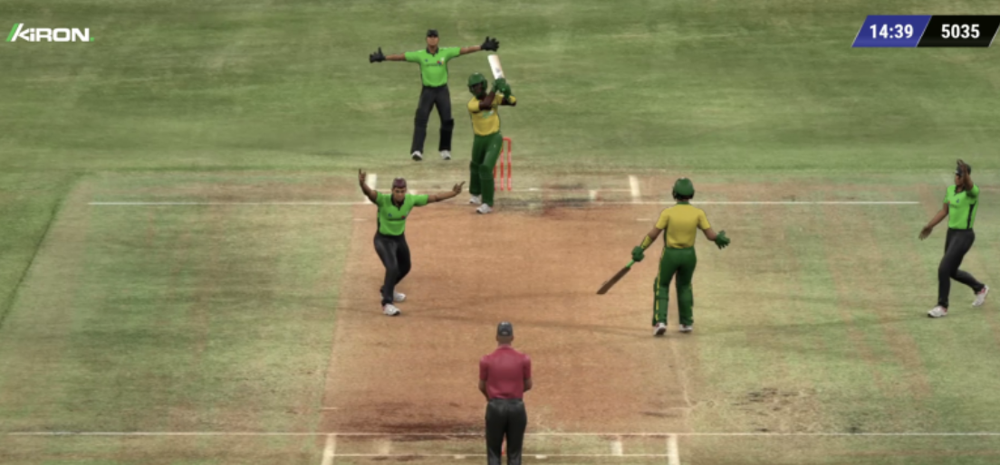

Games / Virtual Sports
Virtual Cricket
Virtual Cricket from Wintech recreates limited‑overs cricket with quick‑cycle matches, wickets, and boundaries tuned for cricket fans.

Cricket in a Compact Format
Matches condense batting and bowling phases into highlights that still feel recognisably like cricket.
Cricket‑specific markets
Runs, wickets and match result markets mirror popular cricket betting patterns.
Short match windows
Designed to slot between live fixtures or operate as stand‑alone cricket content.
Shared tech stack
Runs alongside other Wintech virtual sports using the same integration layer.